Boxdiagramm
Box-Plot
Zusammenfassung
Dieses Tutorial demonstriert, wie das folgende Boxdiagramm mit den Daten und den Verteilungskurven erstellt wird.
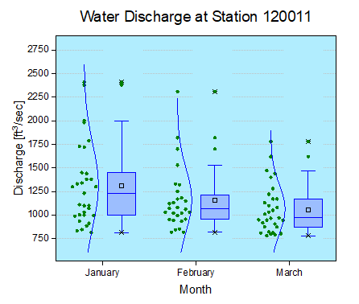
Origin-Version mind. erforderlich: Origin 2015 SR0
Was Sie lernen werden
Dieses Tutorial zeigt Ihnen, wie Sie:
- ein Boxdiagramm mit sich überschneidenden Datenzeichnungen erstellen,
- Einstellungen eines Boxdiagramms benutzerdefiniert anpassen,
- den Layerhintergrund ändern.
Schritte
Dieses Tutorial basiert auf dem Projekt: <Origin-Verzeichnis>\Samples\Tutorial Data.opj.
- Öffnen Sie Tutorial Data.opj und navigieren Sie zum Ordner Box Plot im Projekt Explorer (PE).
- Aktivieren Sie das erste Arbeitsblatt, markieren Sie die Spalten January(Y), February(Y) und March(Y) und zeichnen Sie sie als Boxdiagramm über Zeichnen: Statistisch: Boxdiagramm.
- Klicken Sie auf die Zeichnung und die Minisymbolleiste wird als Popup angezeigt. Klicken Sie auf die Schaltfläche Boxtyp und wählen Sie in der Liste Box[Rechts] + Daten[Links].
- 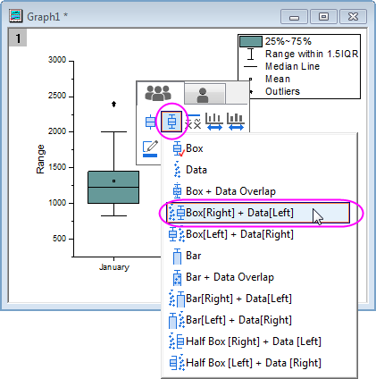
- Klicken Sie auf die Schaltfläche Rahmenfarbe in der Minisymbolleiste und wählen Sie Blau.
- 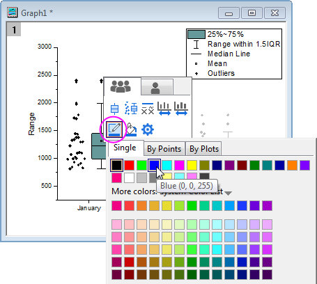
- Klicken Sie auf Füllfarbe und erstellen Sie eine benutzerdefinierte Farbe, wie unten:
- 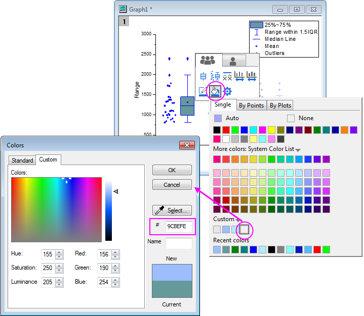
- Klicken Sie doppelt auf eines der Boxdiagramme, um den Dialog Details Zeichnung zu öffnen. Die Registerkarte Daten wird angezeigt, da die Datenzeichnung ebenfalls in der Zeichnung enthalten ist. Ändern Sie auf dieser Registerkarte die Einstellungen, wie unten zu sehen, um die Einteilungsoptionen zu ändern.
- 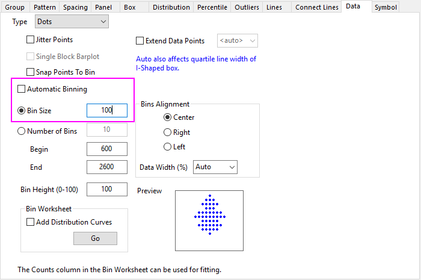
- Gehen Sie dann zur Registerkarte Verteilung, um eine Kurve mit Normalverteilung zu erstellen.
- 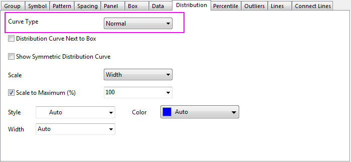
- Der nächste Schritt besteht darin, die Datensymbole auf der Registerkarte Symbole benutzerdefiniert anzupassen:
- 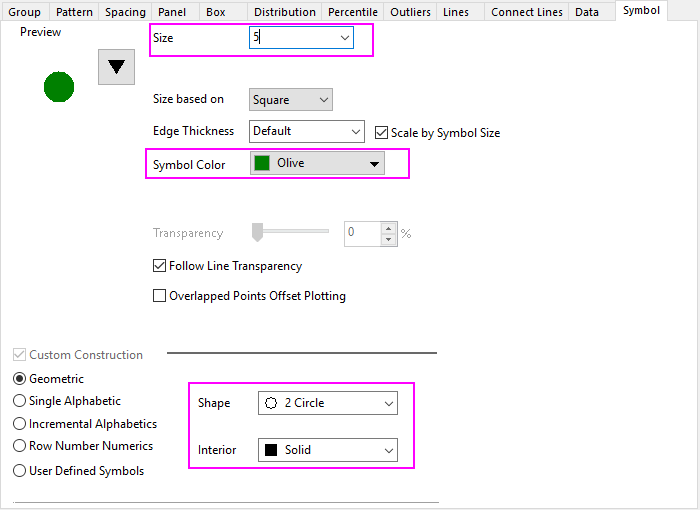
- Der Stil der Perzentilpunkte wird auf der Registerkarte Prozentangaben geändert:
- 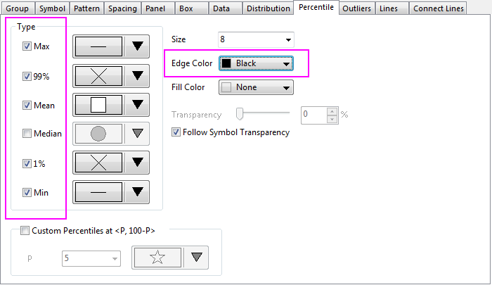
- Im nächsten Schritt wird die Hintergrundfarbe geändert. Wählen Sie in dem gleichen Dialog Details Zeichnung die Ebene Layer 1 im linken Bedienfeld, um die Registerkarten der Layerebene zu öffnen. Wenn das linke Bedienfeld nicht erweitert ist, verwenden Sie die Schaltfläche
 unten links im Dialog, um dies zu tun. Erweitern Sie auf der Registerkarte Hintergrund die Option Farbe. Klicken Sie auf die leere Farbe unter Benutzerdefiniert, um den Dialog Farben zu öffnen. Geben Sie auf der Registerkarte Benutzerdefiniert dieses Dialogs die Werte für Rot, Grün und Blau ein, um Ihre favorisierte Farbe zu definieren. Hier wird die Farbe erzeugt (R:177, G:237, B:254). Klicken Sie zum Bestätigen auf OK und schließen Sie den Dialog.
unten links im Dialog, um dies zu tun. Erweitern Sie auf der Registerkarte Hintergrund die Option Farbe. Klicken Sie auf die leere Farbe unter Benutzerdefiniert, um den Dialog Farben zu öffnen. Geben Sie auf der Registerkarte Benutzerdefiniert dieses Dialogs die Werte für Rot, Grün und Blau ein, um Ihre favorisierte Farbe zu definieren. Hier wird die Farbe erzeugt (R:177, G:237, B:254). Klicken Sie zum Bestätigen auf OK und schließen Sie den Dialog.
- Klicken Sie auf die Y-Achse und in der Minisymbolleiste auf die Schaltfläche Achsenskalierung , um den Dialog zu öffnen. Setzen Sie im Dialog Achsenskalierung - Y die folgenden Spezifikationen für die Achsenskalierung:
- 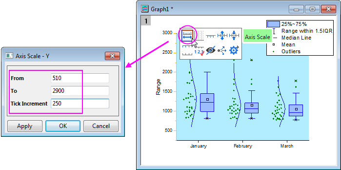
- Klicken Sie doppelt auf den Titel der linken Achse und bearbeiten Sie de Titel, so dass er folgendermaßen aussieht Discharge [ft\+(3)/sec]:
- 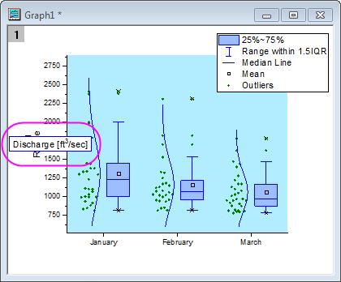
- Klicken Sie auf die Y-Achse und in der Minisymbolleiste auf die Schaltfläche Achsendialoge. Wählen Sie dann Gitternetzlinien. Aktivieren Sie im Dialog die Hauptgitternetzlinien und legen Sie ihren Stil, wie unten, fest. Klicken Sie auf OK.
- 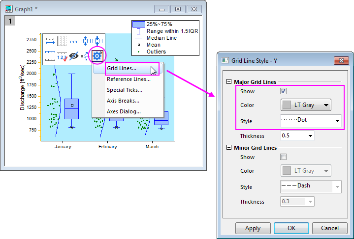
- Klicken Sie doppelt auf die X-Achse, um einen Dialog der Achsen zu öffnen. Aktivieren Sie dann auf der Registerkarte Titel das Kontrollkästchen Zeigen und ändern Sie den Titel der X-Achse in Month.
- 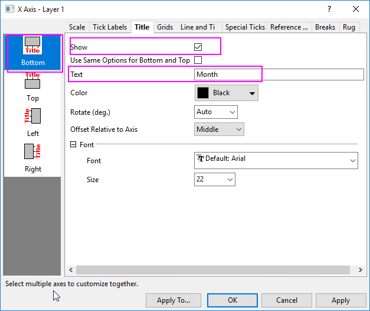
- Gehen Sie zur Registerkarte Skalierung und wählen Sie Vertikal. Setzen Sie im Abschnitt Kleine Hilfsstriche die Anzahl = 0. Klicken Sie auf OK, um die Einstellungen zu speichern, und schließen Sie den Dialog.
- Wählen Sie im Menü Ansicht: Zeige: Rahmen, um den Rahmen zu diesem Diagramm hinzuzufügen.
- Die Legende kann ggf. gelöscht werden, indem Sie sie erst markieren und dann die Taste Entfernen drücken.
- Klicken Sie mit der rechten Maustaste auf den Layer und wählen Sie Layertitel hinzufügen/modifizieren im Kontextmenü. Geben Sie den Text Water Discharge at Station 120011 im Bearbeitungsfeld ein. Vorhandene Layertitel und Achsentitel können modifiziert werden, indem Sie doppelt auf sie klicken, um den Textcursor anzuzeigen.